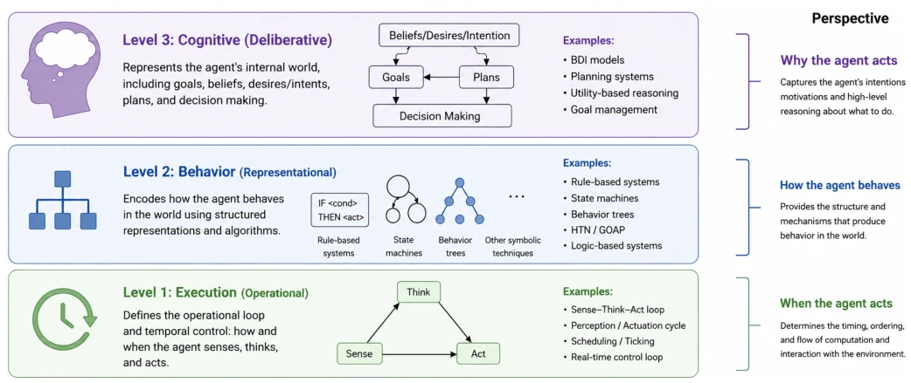
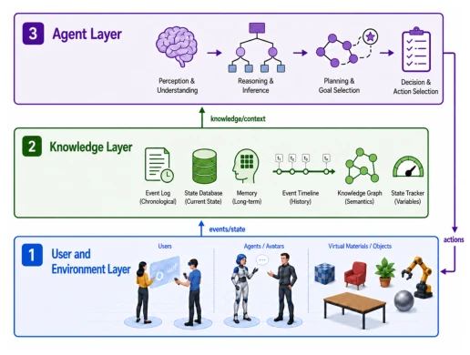

这篇论文试图填补认知智能与实时具身执行之间的鸿沟，但本质上是在给老酒装新瓶。CEAA 架构确实把 BDI、Sense-Think-Act 和黑板模型拼凑成了一个可落地的“骨架”，对于游戏引擎里的 NPC 开发确实有指导意义。但别指望它能像大模型那样涌现智能，它依然是基于规则的系统。作者承认架构目前仍处于“概念和理论层面”，这相当于承认了核心创新点在于“整合”而非“突破”。对于追求端到端学习的 Embodied AI 社区来说，这种模块化设计可能显得过于繁琐且缺乏端到端的优化。不过，在需要可解释性和明确逻辑控制的严肃游戏或教育场景中，这种“透明”的架构比黑盒模型更实用。
This paper attempts to bridge the gap between cognitive intelligence and real-time embodied execution, but essentially it is putting new wine into old bottles. The CEAA architecture indeed pieces together BDI, Sense-Think-Act, and the blackboard model into a deployable "skeleton", which indeed has guiding significance for NPC development in game engines. But do not expect it to exhibit emergent intelligence like large models; it remains a rule-based system. The authors admit the architecture is currently still at the "conceptual and theoretical level", which amounts to admitting the core innovation lies in "integration" rather than "breakthrough". For the Embodied AI community pursuing end-to-end learning, this modular design may appear overly cumbersome and lack end-to-end optimization. However, in serious games or educational scenarios requiring explainability and explicit logical control, this "transparent" architecture is more practical than black-box models.
Existing Intelligent Virtual Agents (IVA) face a dilemma: either rely on low-level reactive controls such as state machines, behavior trees, which are efficient but lack goal-oriented reasoning and explainability [9], [11]; or adopt high-level cognitive models such as BDI, SOAR, which are theoretically rich but difficult to deploy in real-time 3D environments [13], [14]. Commercial game engines, while supporting embodiment, lack high-level cognitive logic support, leading to tightly coupled systems that are difficult to extend. Researchers need an architecture that can handle dynamic environment interactions while maintaining cognitive depth. CEAA aims to resolve this "cognitive-execution" gap, providing a reusable "brain" template, enabling agents to autonomously adapt and explain behaviors in complex interaction systems, especially in scenarios requiring explicit logic such as educational VR [15].

Fig. 1. Graphical representation of the three levels of abstraction in agent architectures.
CEAA adopts a three-layer architecture: User and Environment Layer, Knowledge Layer, and Agent Layer. The core data flow starts with environment events, recorded via a shared blackboard (Knowledge Base), and the agent selectively perceives through the Sense component. Memory stores experiences, and the Think component coordinates cognitive modules. Cognitive Construct maintains Belief, Desire, Intention states, Reasoner infers based on this, and Planner generates action sequences. Behavior Mapper maps abstract actions to specific animations or speech, and the Act component executes. Agent Capabilities define the set of executable behaviors. The innovation lies in explicitly separating cognitive states from embodied execution, utilizing the blackboard to achieve multi-agent shared knowledge, and supporting case-based reasoning through the Memory Processor. This design refines the Sense-Think-Act paradigm into 12 interconnected modules, ensuring perception, memory, reasoning, and action are decoupled in time, adapting to real-time rendering constraints. It does not rely on a single engine, but is integrated as a template into systems like Unity, achieving decoupling of cognitive logic and physical implementation, enhancing system maintainability and scalability. Additionally, the architecture supports asynchronous execution, separating computation-intensive cognitive operations from frame-level rendering, ensuring real-time performance.

Fig. 2. Three-layer virtual agent architecture integrating the environment, knowledge representation, and agent reasoning and action.
The prototype was built based on Unity3D constructing the ENIAC virtual museum, deploying 4 embodied teaching agents. 92 undergraduates were randomly assigned to desktop or VR groups, conducting 45-minute interactions. Evaluation metrics included pre-post test knowledge gain and Technology Acceptance Model (TAM) questionnaires. Results showed that both groups achieved significant knowledge improvement, with no significant difference between groups, proving the architecture's cross-platform validity. The VR group was slightly higher in effort expectancy and behavioral intention. Focus group feedback indicated the VR experience was more immersive. However, the experiment did not compare other architecture baselines, only verifying feasibility rather than superiority. Ablation studies were missing, unable to quantify the contribution of each module. Future work requires further benchmarking to evaluate performance and scalability.